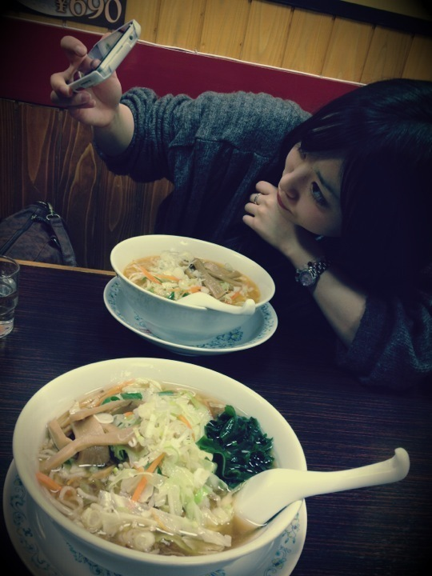
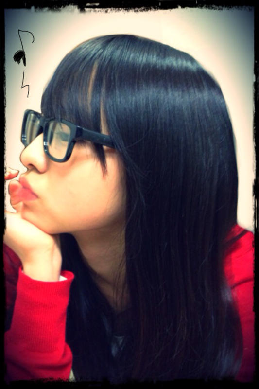

| 2011/12 08 Thu | 伊藤万理華 20回目*marika |
やぁっ!!ベビたんですよ。
いつも読んでくださってる方、
初めて読んでくださった方、
コメントしてくださった方、
ありがとうございます:)!!
...............................
＊質問返します!
・最近は何をして遊ぶのが好き？
のぎメンとじゃれ合うことです♡
・モコモコ系好きなの？
モコモコかわいいですよね!*
うん。モサモサとかフサフサとか好きです笑←
・写真はパソコンで描いたりしてる？
アプリ使ってますよ-!!
便利ですよ^^*
・お菓子なら何を作るのが得意？
そんな...でもないですけど
簡単なクッキーとかですかね...
ほんとそんなでもない!!すみません!!
女子力上げなきゃ~~~!!
・カラオケに行ったらいつもどんな歌唄うの？
あんまりカラオケ行かないんですけど
行くときはみんなが知ってる流行りの曲をうたいます*
まぁ盛り上げ担当が多いかな。
マラカス持ってへい!へい!ゆってたらね、
うるさいみたいです...笑
・手紙の柄は何がいい？
キャラクターでも全然いいと思います!*
うれしいです-!!ありがとうございます><
・好きなお菓子は？
梅系お菓子!!!!!
茎わかめとかこんぶすき♡
・ビーフジャーキー以外に好きな食べ物は？
笑!!
ピーマンパプリカなす生姜チーズ梅セロリ....etcです。
・どこ出身？
本当は大阪なんですけど、
神奈川に小３から住んでて長いんです++;
だから神奈川出身!!
・他のメンバーのブログって読んでる？
時間があれば読みますよ-*!!
みんなの記事おもしろい!
・まりりって呼んでもいい？
呼んで呼んで!!
うれしいですよ^^*
・ダウンを上手く着こなす方法ってある？
ダウンはボリュームがあるから
下をすっきりさせたらいいと思います☆
ちなみに私の軽いダウンは家用です。
・好きなゲームとかある？
昔動物の森やってました**
マリオとか!!
最近やってないなぁ...
・他に丸顔のメンバーはいる？
私めっちゃ丸いですよね!
よくほっぺ触られる笑
メンバーの中だったら...とまとかな~??
丸顔仲間＊!
・大阪には友達いる？
たっくさんいますよ!!
あ〜みんなにめっっっちゃ会いたいわ-...
・手紙ってどこに送ればいい？
ありがとうございます♡*
〒102-8353
東京都千代田区六番町4番地5
「乃木坂46運営事務局」宛
に送ってください!
私のところにしっかり届きます!笑
以上!
...............................
Lesson帰りにねねころとラーメン食べた~!

自撮りしてるねねをパシャリ＊
ん〜かわいい笑!!
ラーメンおいしそうでしょ?
食べたい?
食べたい?
食べちゃったよ笑
(...調子のっちゃた)←
髪型ほめていただいて
とってもとってもうれしいです!!*
次は何載せようかな~:Dにやにや

ふん ふんふふんふふ---ん ♪♫♩
赤いニットはこないだ買ったZARAのカーディガン♪
(ちょとクリスマス意識)
もうすぐクリスマスですね*!
サンタさん。今年はくるかな〜←
みなさんは何をお願いしますか＊?
みなさん。
コメントで
「読んでいて楽しい」
「写真がすき」
.....
いつも、いつも、
本当にうれしいです。
私のBloGを読んで
元気になってくれて
笑顔になってくれて
いじってくれて....←
本当に心暖かい方ばかりで。
私もBloGをかくのが楽しいです＊
いつも感謝してます*＊。+*
...なんかかたいね-!!!
でもBloGをかいてる時いっつも思うことなんです!!
うん!...
寒いですね。
さっむ----------!!!!!!!!!
何度も言うけど、みなさん風邪ひかないでね。
心配しちゃうからね。
受験ある方!頑張ってください!!
お仕事、学校。
寒くて手がかじかんじゃうけども
一緒に頑張りましょう＊!!
ベビたん*****bA by marika